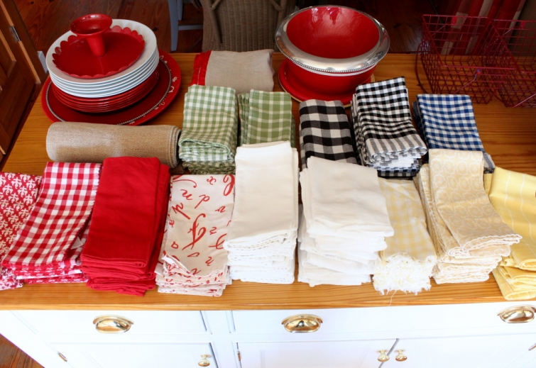
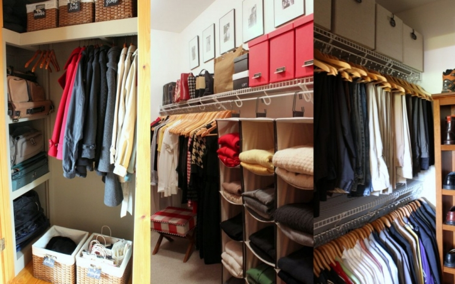
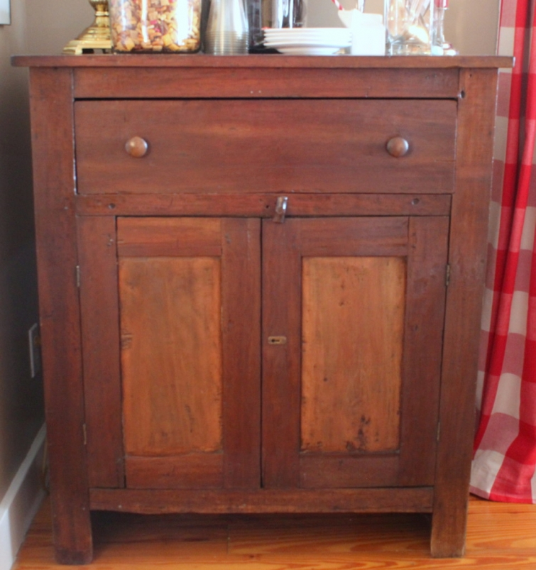

.png)
.PNG)
.PNG)
.PNG)
.PNG)
.PNG)
.JPG)
.JPG)
.PNG)
.PNG)


Welcome February! ¬†It’s hard to believe the first month of 2016 is already gone! ¬†Was organization on your list of goals for this new year? Back in 2014, I had a new year’s goal to undertake one organization project each month. ¬†I was still working full time then, and I might have made it through organizing the coat closet, the¬†master bedroom closet, and the boys’ bedroom closet.¬†Then all those good intentions just sputtered and died. üôÅ

Along came 2015…. a year with a lot of traveling and a lot of parties. ¬†All good things, but if you are like me, moving quickly from one project to the next, you may have a tendency to…um…not put things back where they belong. You wouldn’t ever be guilty of that would you?¬†Well I was majorly guilty of it.¬† 2015 was the year of cramming-things-in-drawers-and-cabinets to get them out of the way for the next thing that needed to be done. Sad, but true.
And now we have reached 2016, and I have reached the end of my rope with all the messy cabinets around here. The storage areas in the dining room have been driving me crazy, so January’s organization project has been to try to put them in some kind of logical order. I want to share the photos of this reorganization with you today, but I must warn you. ¬†They are not pretty…not pretty at all. üôÅ
Let’s start with the crime scenes:
An antique jelly cupboard from Savannah built in the 1800’s…
Innocent enough, right?
Here is the mess inside:
A top drawer of jumbled linens
(not too bad at this point.)
 and a bottom shelf area with piled up dishes and stored gingerbread houses.
and a bottom shelf area with piled up dishes and stored gingerbread houses.
Half of the dishes were missing because they were out on the table, and I had stolen a couple of the jars that normally hold the gingerbread houses.  So it is usually much worse than this.
Crime Scene #2: ¬†the built in cupboard…
and its inner contents:
(Except for the messy stacks of napkins, this one wasn’t too bad.)
But why did I have some napkins in there and some in the cupboard?
Finally the worst of the bunch:
Crime scene #3: ¬†the island…
Its drawers were pretty bad.
And now below the surface…
My third before-shot wasn’t in focus, so no photo here.
Trust me though.  It was bad.
Now to make it all better. ¬†üôÇ ¬†Besides general straightening up, the cabinets needed some logical order…some grouping that made sense. ¬†I decided to group all the paper goods together, all the dishes together, and then go from there. You know you have to make a mess in order to clean up a mess. ¬†So I totally emptied the jelly cupboard first and started over to make it the “paper goods place.”
Here is the new and improved interior:
Paper napkins, straws, balloons, and etc. go in the top drawer baskets.
(with a couple of random scoops thrown in because they didn’t fit anywhere else.)
The bottom now holds paper cups, plates, bowls…
(and my most frequently used cookbooks.)
and tubs of utensils, picks, and containers.
By getting all of the paper items out of the island drawers, I was able to free up space to put all the linens in them.
And that also left more room in the bottom space for the organization of all sorts of serving pieces and plates.
Cake stands,
dinner plates,
and various types of metal-ware.
Then finally, with the linens and cookbooks out of the built in cabinet, more space was left for glassware and dishes.
I wish the dinner plates could have also been stored in there, but the cabinet is not deep enough for them. ¬†And even if it had been, there wasn’t enough space.
I still need to get the pumpkin plates out of the attic to add to the stash of dishes in the cabinet, and then this first organization project of 2016 will be finished. ¬†My February project will involve some painting, so it will take a little longer to complete. ¬†Fingers crossed that it will be ready to show you on the 1st of next month. ¬†üôÇ
Thank you for reading the post and sticking with me through the ugly photos.  Have you completed any organization projects so far this year, or do you have plans for some?  We would love to hear about them in the comments!
Until next time…


.PNG)
Kelly: when I look at your drawers and cabinets, I realize just what a spartan life I live. I have two sets of cloth napkins that I never use, and two sets of dishes (one is the everyday china from my bridal showers/teas 40 years ago). I have no words when I look at all the stuff you have. Yep. Spartan. That’s me. p.s. – you did a great job of organizing but I’d never let you see MY messy drawers. LOL üôÇ
Hi Kelly! You’re so right January went off so fast! And YES organization is at the top of our list too. Unfortunately we first have to do a lot of building work in our home so I can get a little frustrated with my organizing ‘options (ahhh, open shelves with a toddler! ^^).But we keep going! üôÇ Congratulations for the great work! It looks beautiful!
——————————————————————–
I don’t know how in the world you can handle open shelves with a toddler! Goodness! Thank you for the compliments on the organization. There is plenty more of it needed around here. Good thing I am retired! üôÇ
Kelly
Very impressive! My problem is I don’t know where to start, very overwhelming! Your cabinets look great! You’ve given me inspiration..
———————————————————————
I know exactly what you mean about not knowing where to start. I had to really think about how to go about organizing the cabinets. I knew putting items together in storage that normally go together would make the most sense (for example all the linens together, all the paper goods together, etc.) Then I had to think about which cabinet was best suited for each of the “collections.” Once I determined that, I had to determine which cabinet to start with. That is why I often just pull everything out, lay it all on the table, and then go from there. With one entirely empty space, it is usually easy to go from there (at least for me it is.)
Glad you could find some inspiration in the post! üôÇ
Kelly
Kelly,
I love organization although I have to work on it. We lived in our house a good 10 years before I realized the coat closet just off the kitchen, coming in from the garage would make the greatest place to store extra dishes and serving pieces. Before it was just a mess of coats and shoes that were rarely worn. I had a carpenter come in and pur shelves in there and I use it use it has worked so much better. Sometimes it is just rethinking what you have to make things work better.
DiAnne
———————————————————————-
You are so right DiAnne! Sometimes rethinking what you have makes the best thing for reorganization. Love what you did with your coat closet. Very smart!
Kelly
Kelly,
Your stashing style is exactly like mine. I move from one project to the next and from one Holiday to the next so quickly while trying to keep up with the kid and grade papers that nothing is quite as organized as I’d like. I have hope though…one day, when I retire, I shall organize one room and one piece of furniture at a time just like you. Thanks for the sharing and for the inspiration.
Dawn
———————————————————————–
Teaching just doesn’t allow time for anything “extra” in anyone’s schedule; does it? There is always so much to bring home with you, and that interferes with keeping up with everyday life. Yes, when you retire you will be able to do all those projects that you have on your to-do list. üôÇ
Kelly
Your organization looks great! But, I have to admit that your “messy” photos didn’t look terrible at all to me. I won’t show you my cabinets!! Guess I’d better get organizing!
——————————————————————–
Thanks Debbie! The spaces mostly needed reorganizing in terms of what would logically go where. Good luck with your organization projects! üôÇ
Kelly
Your organized cabinets and drawers look fantastic. I can so relate to your having a party then stashing for the next!! I’m constantly moving, grouping, and reorganizing but just need that one storage cabinet that will make the difference. Haven’t found it yet. I have the place and dimensions, guess I’ll hire a carpenter and have it built. Your dishes and linens are beautiful, when’s the next party? Thanks for the inspiration! Have a great week.
——————————————————————
Thank you Mary. üôÇ Finding just the right piece of furniture can be a challenge. I totally understand about hiring someone to make it to your specifications. Good luck with it! Our next party will probably be Valentine’s weekend…not quite sure yet.
Kelly
I always love a good “organizing” post!! I can honestly say organizing is one of my favorite things to do! üòÄ Your spaces weren’t too bad to begin with, but they look great now. I think you are so right about our organizing being logical and making sense. I love the idea of one space for your paper products. Mine aren’t together so now I want to go group them. üòâ And your antique cabinet is so beautiful by the way!! My son kinda “forced my hand” by buying me a cubby shelf for Christmas so I had to move a hutch to my living room to make a space for it. Now I am trying to figure out where to store some of the dishes and where to move the piece that was already in the living room. Oy! Decisions, decisions! üòâ Thanks for the inspiration. üôÇ
———————————————————————-
Wow, you love organizing Gina?! I bet there are people who would gladly pay you to come organize their closets and cabinets! üôÇ Thank you for your kind words about ours. It sounds like you have major domino action going on in your living room! Best of luck with all your decisions.
Kelly
We all have “crime scenes” and I won’t abhor you with mine. But you do inspire me to do something about them. I still work full time so my clean/organizing happens on Friday nights and Saturdays. I never catch up, only maintain. ONE DAY!
———————————————————————–
Working full time just kills project time. You are right. You are doing good to maintain. When I was teaching, I always always felt like I was playing catch up. The weekends might let you catch up, but I never felt like I could get ahead with anything when working. (And I always brought home so much work to do at night and on the weekends too. üôÅ ) Yes, one day you will get your projects done. üôÇ
Kelly
I have been doing some organization with my dishes and linens too. Sorting them and getting rid of a few so that hopefully 2016 will be less cluttered! Your cabinets look great!
——————————————————————–
Julia, thank you for the compliments on the cabinets. Good for you getting your organization and decluttering done! Yes, hopefully 2016 will be less cluttered!
Kelly
This is very timely and helpful for me. I have been purging and organizing and as space opens up, peace flows in. We have a living room/dining room combination. The bottom half of our hutch (behind its closed doors) has been used to store toys for many years. Since my youngest is a teenager, I finally cleared it out and am now happily debating on how to best use the space. Thank you for your ideas and inspiration. I really like to read and view photos related to decluttering and organizing. Along with cleaning, of course, it sets the foundation for decorating and celebrating.
———————————————————————-
I know what you mean about the peace flowing in when the space opens up, Dana. It is just less stressful, so definitely more peaceful. üôÇ Sounds like you are making good progress with your organization! I’m so glad you enjoyed this post.
Kelly
Streamling and simplifying is the name of the game for me. . This year I add a numbering system to the already labeled boxes to make retrieval easier for Christmas 2016. This is an example, box #1 of 12, label reads: Christmas lighted greenery, pinecones and bows. Having all the boxes with labels on the ends and number make it much more manageable to obtaining only the boxes needed to decorate a space. Seems that now this project of sorting and stowing all the holiday decor leaves my home denuded.
———————————————————————
Hi Marianne! Your Christmas decor boxes sound much like mine. My numbers follow the order in which I decorate rooms, and like yours, mine are also labeled with the contents for Christmas. Then I have boxes labeled with the months for the rest of the year. Our February one is down right now until the end of the month when it goes back up to the attic, and the March one comes down then. I am hoping that my husband will build me some more shelves up in the attic this year so that I can better store all the boxes. Good luck with your projects!
Kelly
I would love to organize and my cabinets and drawers look MUCH worse than yours do in the before pictures! However, I babysit my 18 month old grandson during the week and we are much too busy reading and playing and watching Mickey Mouse Clubhouse to do much organizing! Weekends have been too busy for organizing also! But, I will get to it eventually I hope! It’s a disaster behind closed drawers and closet doors and it is getting on my nerves!
———————————————————————-
I don’t know how you get ANYTHING at all done with an 18 month old toddling around! I remember those days…not much done with the house, but I knew the baby days would not last long. You should enjoy them while you can. üôÇ I make such a mess when trying to organize, and I spread it all out, so it would be impossible to do with small children around. Nap times might have allowed organization of one or two drawers at time, but usually that was when I could get laundry done. Enjoy that baby. The mess can wait.
Kelly
Oh, Kelly! You are so organized! Even what you think is messy is organized. But, I still love you!
——————————————————————–
Well I am glad you do Kathy. üôÇ The island was messy, but the others not so much. It was more the fact that it just didn’t make sense with some things here and some there, and I couldn’t remember which cabinet housed what. It needed some LOGIC. üôÇ (Math teachers must have that, right?)
Kelly
Just this morning, I opened a cabinet door and had bags of half-eaten chips fall all over my feet! I pulled everything out, and put it on top of the counters to organize later today! It seems like when company comes, I always make a sweep around the house and shove things in drawers and cabinets, only to have them explode after everyone has gone home! When will I learn?
(don’t answer that!)
——————————————————————–
Shh…don’t tell. Our pantry is my February project because, like you, I know all about the avalanche of food packages. Potato chip bags do seem to be the worst behaved of them all! I’m sure you have that cabinet all cleaned up and organized by now Leslie Anne. üôÇ
Kelly
Oh wow! What fun! I felt like I was right there snooping in your cabinets!! I am so inspired to tear out and organize!! I zoomed in on your precious cookbook collection to see the titles. What a good job you did!! I have so many messy areas I need to tackle– working on getting my bedding and linens all washed, ironed and looking picture ready!! Also trying to make my new laundry room/ craft room set up to my liking. Been looking for a special wall hanging and working on my lighthouse collection to use in there. Also cleaning for BD party this weekend– 26 coming for Chinese Buffet celebrating Chinese New Year!! Busy! Busy! Just like you!! üôÇ Thx for allowing us to see in all those secret places you house your special treasures!! Happy GH day tomorrow!! 6 more weeks ’til Spring!! üôÇ
———————————————————————
Oh yes, you were snooping around my cabinets! LOL If you are working on a craft room, that is MAJOR Louvina. Mine took a lot of thinking to get it like I wanted. Sounds like you have a busy week and a fun weekend planned! Enjoy the time with your friends. üôÇ
6 weeks until spring? Noooo….I want some snow this year! I guess we are going to have to travel north to find some. üôÅ
Kelly
Looks amazing! I am an organizer by nature-it’s therapy to me not work. However, I never thought about putting platters and serving trays upright against the back of the cupboard like you did. Genius!! Thanks for the idea.
———————————————————————
Aw thanks Shelley. Organizing is therapy? I think it is the “immediate gratification” that makes it so fulfilling. üôÇ Glad to share the platter idea with you. Have fun with your therapy!
Kelly
I THOUGHT FOR A MOMENT I WAS LOOKING AT MY OWN CABINETS!!
——————————————————————-
Too funny Debbi! üôÇ
Kelly
Excellent choice of projects. Thank you for the before shots. Gives me hope üôÇ I plan to empty out the bottom of my china cabinets and you have totally inspired me to get at it! Just love your posts.
————————————————————————
Go for it Gwen! I’m glad I could give you some inspiration for what can be done. üôÇ
Kelly
So inspiring being this is my first official week a a retiree!!! Thank you !!! BTW… I love your blog and your house!!! So BEAUTIFUL!!!!!!
——————————————————————–
CONGRATULATIONS Robyn! Enjoy your retirement…every.single.minute of it. üôÇ
Kelly
I cleaned and organized the basement. I am not done yet because something (health) came up in fact I am taking my hubby to the same Town your son is in for their hospital. I got rid of a lot of things and organized what is left. I have one more section to finish and then I will have boxes and boxes and boxes of clothes and linens to donate.
———————————————————————
I hope your husband is doing better. You’ve done a lot Patty if you have almost finished cleaning the basement! It feels so good to get rid of things. Sounds like you have accomplished quite a bit! Good luck with finishing the basement. üôÇ
Kelly
I can take some of those red dishes and napkins off your hands.
——————————————————————–
Thanks for the offer Ann, but I think I better keep them. LOL They come in quite handy around here! üôÇ
Kelly
Kelly this post is so funny to me because I often want to ask all bloggers, who entertain and throw themed parties…”where do you store all this stuff?” Now I know. I am in the process of reading…. the life-changing magic of tidying up. So far I have one box to donate and three small bags for Salvation Army. I am really enjoying it because I have a tendensy to buy a lot of nick nacks that in a few months don’t really do anything for me so it is helping me scale back and only buy things that I really love. Going through my table cloths was a real challenge though. haha
———————————————————————-
I store a lot of it in the cabinets you see, but I also store many seasonal things in tubs in the attic. So do you recommend the book? It looks like it would be an interesting read. I might have to check it out. I find it much easier to throw away things than my husband does. Congrats that you were able to make it through your table cloths!
Kelly
Organizing is a good thing and the cupboards and drawers in the before pictures were looking great to me but the after are mighty fine! I’m thinking I should tackle Christmas mess this week in the basement.
———————————————————————–
Thanks for the compliments on the organization Anita! Best wishes for your work on the Christmas things. I hope that it isn’t too big of a project for you.
Kelly
I did this very thing on Saturday afternoon! My husband and I went out to breakfast and then hit Ikea for a good hour, just brainstorming about various storage ideas (what a good husband he is to do that with me, happily). Then I came home and emptied out a cabinet my dad had made my mom years ago to hold her sewing supplies (which I was using for my girls’ childhood toys, mostly – Breyer horses, plastic doggies, an Erector set, games). I also emptied out the five utility shelves in my furnace room which have been holding most of my dishes and decorative plates. Without giving you the blow-by-blow, the dishes are now in the cabinet my dad made and the boxes of Lego and Breyer horses are in the furnace room. I’d like to purge my Christmas things but that may wait until summer, lol.
————————————————————————
How lucky you are to have an Ikea close by! It sounds like you made great progress with your organization. Brainstorming helps! I totally understand waiting until summer to go through all the Christmas items. That is usually a big job!
Kelly
Well done looks beautiful!!
———————————————————————
Thank you so much Linda. üôÇ
Kelly
Kelly,
I love the end result. I had to smile as I viewed the inside storage spaces…if you hadn’t shared with us that red is your favorite color, your cupboards would reveal that fact. I love organizational posts…they never fail to inspire me to take the time to organize storage in my home.
I love some of the patterned napkins, you have some very pretty props for entertaining. üôÇ
xo,
Karen
———————————————————————-
How funny Karen! I never even notice all the red now. üôÇ I can’t resist pretty linens, so yes, there are a number of props to use. Thank you for the compliments on them!
Kelly
Well done and you accomplished that on the first day of Feb. Organization and cleaning out is ALWAYS my New Year’s resolution…never exercise and diet….tried that and it didn’t work.
——————————————————————
Thank you Cheri. I am right there with you on not putting exercise and diet on the New Year’s resolution list. üôÇ I can usually accomplish an organization project…but diet and exercise just don’t seem to hold the same attraction for me. LOL
Kelly
Yes, my linen closet was a huge mess and as always I straighten the pantry. You did a fabulous job and it all looks so good.
———————————————————————
Thank you Marty! I am sure your storage areas all look good. üôÇ
Kelly
I Have been purging and organizing! The most recent project was to find a home for a set of dishes I did not use, pack them up, and deliver them. They ended up at a re-use shop (non-profit) that serves women and children victimized by abuse. The 96 piece set of dishes will be available to women who may want it to use in their starting over home. Now on to the basement….ugh! I echo the sentiments of others who said your disorganization looked pretty good! This was an interesting post…motivating! Thanks, Kelly!
———————————————————————–
That is so wonderful about your set of dishes Sandy! I know someone will just love getting all of those pieces. Good luck with your basement project! That sounds like a big one to tackle.
Kelly
I have some very similar “crime scenes” in my house right now. Between the holiday cleanup and the ongoing ‘recovery’ from our summer renovation, I have got to get back on track with my organization. Loved seeing your photos – all of them…and I want your napkin collection!
Shelley
———————————————————————-
Thanks Shelley! I can see how a renovation followed by the busy holiday season would set anyone back on organization. I hope 2016 provides you the time to take care of it in your home. Glad you liked the napkins! I have gathered all of them over a number of years.
Kelly
Hi Kelly, thanks for the “party in a drawer” photos…you have so many beautiful and fun items, it would be a pleasure to reorganize. It’s my day off. You’ve inspired me to consider spending the day reorganizing our linen/toiletries closet. It’s well overdue! Enjoy your day.
———————————————————————-
Thank you for reading Tricia! Glad the post could provide you some inspiration. I hope you accomplished your closet reorganization projects!
Kelly
Wow I was going to say you’re normal, one of us! But I see you organized so well. Guess I can achieve it too. I’ve been de-cluttering for the whole month on January! I have boxes on my family room’s floor filled with junk I need to get rid of. I just can’t seem to finish. Hopefully I’ll be done by the end of this month!!! Yikes.
———————————————————————–
Yes, you can achieve it too Delma. Most definitely! If you have been working on it a month, I am sure you have made a lot of progress! I don’t know if organization ever ends. There always seems to be another space to work on as soon as you finish one. I just take it one space at a time.
Kelly
Your “mess” was not half as bad as mine. Yes I did start the New Year with a “huge” clear out. How freeing. Good on you for doing it too. Something about this New Year seems to have a lot of people doing the clear out thing.
———————————————————————–
Good for you for clearing out so much Margaret! It is freeing, isn’t it?! Now on to the next project. üôÇ
Kelly
I thnk your mess is tidy! However, the reorganisation is a work of art.
———————————————————————–
Thank you Gabrielle! It mostly just needed to have some of the items relocated so that it made more sense. It needed logic! üôÇ
Kelly